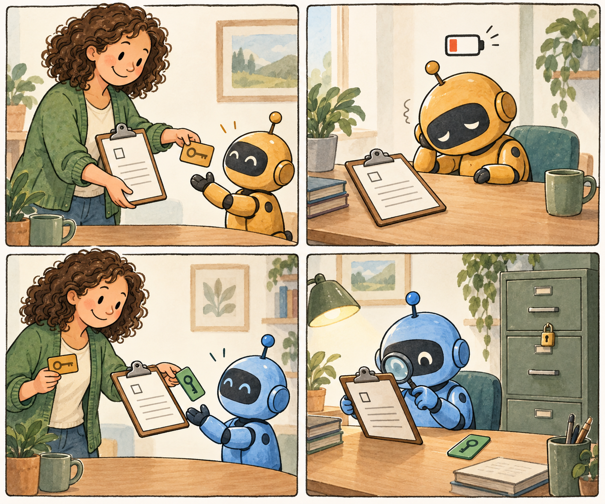

THE CONTINUITY PLAYGROUND
What if you changed
just one thing?
Create a case. Change permissions. Replace an agent. See what survives.
FOLLOW THE HANDOVER
Step 4 of 4The job survives the handover.
Review the suspicious packet
…Checking the saved work…
The four stages replay a signed example. Your extra choices create a fresh synthetic variation after the selected stage. Rewinding is an experiment, not rewriting a real history.
What may this helper do?
Loading the engine…
A result will appear here.
Try changing a permission, then compare.
ALLOW describes the chosen rules and history. This playground does not carry out the operation, prove a report true, or protect a real computer.

The clipboard is the work.
The card is permission.
A new helper can receive the unfinished job without receiving every old power. Taking away permission does not make the job disappear. The team still needs to decide how to finish it.
Read the illustrated explanation → · How this playground works →